1. 概述
1.1. 百花绽放的通信模组
随着嵌入式系统终端对网络的需求越来越多，各种通信模组百花齐放，几乎覆盖了所有的网络接入方式：WIFI、2G、4G Cat.1、4G Cat.4、NB-IoT、LoRa……未来还会有更多。
对于嵌入式系统终端而言，这些通信模组屏蔽了网络接入方式的差异化，无论使用哪种方式接入网络，设备仅仅需要提供一个串口与模组交互即可。
交互双方有了通信的硬件基础（串口），还需要制定和遵循一套有效的软件协议，目前大多数模组厂商都采用AT指令集。
1.2. AT指令集
AT指令有两种：
① 普通AT指令：以AT开头、换行符结束的一组字符串，每个指令执行成功与否都有相应的返回。
---> AT
<--- OK
②其他的一些非预期的信息，模块将有对应的一些信息提示，主动发送：
<--- +IPD:...
<--- +URC:...
AT指令交互类似服务器/客户端架构，一般来说模组侧作为AT服务端，MCU侧作为AT客户端，交互方式对应也有两种：
- 客户端发出一条AT指令，服务端收到处理之后返回结果给客户端；
- 服务端主动发送数据给客户端，客户端被动接收处理；
整体架构如下图：
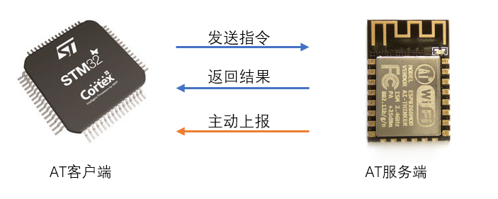
模组的功能非常丰富，有修改模组配置的AT指令、有TCP/IP协议栈通信的AT指令、甚至还有MQTT、HTTP、NTP协议栈的通信指令，这些指令合在一起构成了该模组的AT指令集。一般来说，同一家厂商的不同模组之间，AT指令集差异不大，而不同厂商之间的AT指令集之间差异较大。
1.3. AT指令解析方式
AT指令有三种解析方式：
- 裸机直接在串口中断处理函数中解析
因为解析时间未知，所以这种解析方式最不可取，极容易出现数据丢失问题。
- 裸机使用ringbuff（环形缓冲区）缓存数据，在main函数中构造状态机解析
串口每来一个字符就送入缓冲区，最大程度保证数据不会丢失，这种解析方式随着main函数中其它业务逻辑的增多，导致缓冲区数据迟迟得不到解析，依然会出现问题。
- RTOS使用ringbuff缓存数据，创建一个任务专门用于数据解析
同样，串口每来一个字符就送入缓冲区，保证数据不丢失，只要数据解析任务的优先级够高，数据总是会被及时解析，大幅提升系统的实时性能。
1.4. AT框架与SAL层
什么是AT框架？其实并不神秘~
AT框架是RTOS官方人员/社区开发者编写的一个通用AT指令解析任务，使开发者只需要调用 AT 框架提供的 API 即可处理与模组的交互数据。
SAL框架全称Socket Abstract Layer，提供了类似socket网络编程的抽象层。基于AT框架实现SAL的底层函数叫做通信模组的驱动程序。
2. TencentOS-tiny的AT框架
2.1. 整体架构
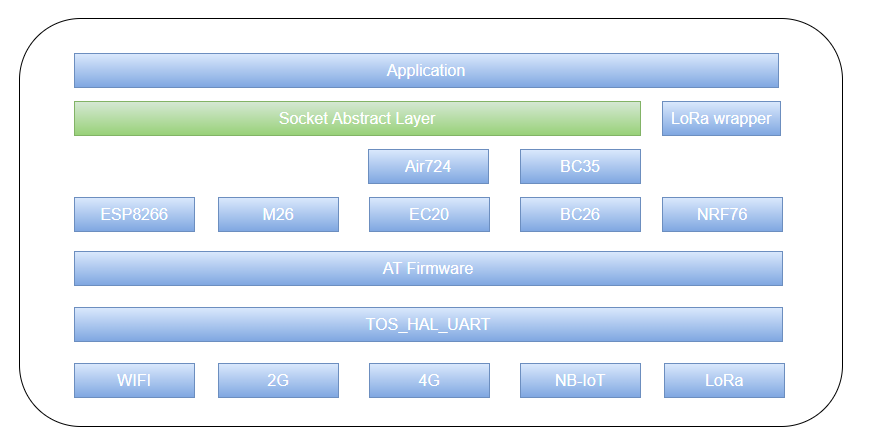
2.2. 实现原理
TencentOS-tiny AT 框架的实现在 net/at 目录下的 tos_at.h和tos_at.c两个文件中。
① AT框架所有接收数据的数据流向如图所示：
- 串口中断中逐个字节接收，写入 chr_fifo 缓冲区；
- 解析任务 at_parser 从 chr_fifo 缓冲区中逐个字节读取，读取一行数据到 recv_cache （行缓冲区）并进行处理；
- 处理之后如果不是模组上报的普通的数据，也不是AT命令期望的返回结果，也不是 "OK"、"FAIL"、"ERROR"，则为普通数据，将行缓冲区的数据复制到用户传入的 echo_buffer中，由用户处理。
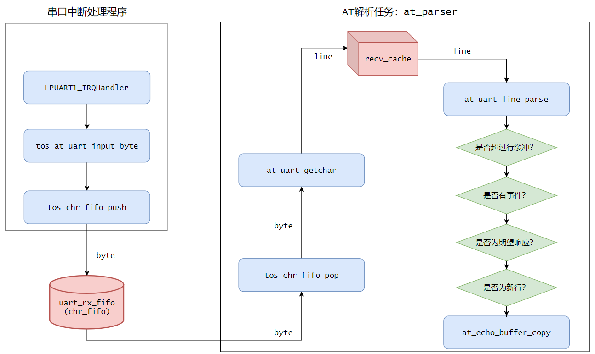
② AT框架将模组主动上报的数据作为事件，将上报数据的数据头和用户指定的回调处理函数作为事件表，在AT框架初始化时注册。
比如 ESP8266 在 TCP/IP 通信时，收到远程服务器发送来的数据时会使用+IPD头主动上报数据，将此事件注册的示例如下：
/* esp8266.c */
at_event_t esp8266_at_event[] = {
{ "+IPD,", esp8266_incoming_data_process },
};
注册之后，每次行解析的时候都会判断是否为事件头，如果是则证明有事件发生，拉起注册的回调函数进行处理。
注意，AT框架只从 chr_fifo 中读取出了事件头，事件头之后的所有数据依然在缓冲区中，所在开发者在编写回调函数时可以边读出数据，边解析数据。
③ 如何完成一次交互？
AT框架将每一次交互抽象为一个 at_echo_t 对象，用户交互的流程如下：
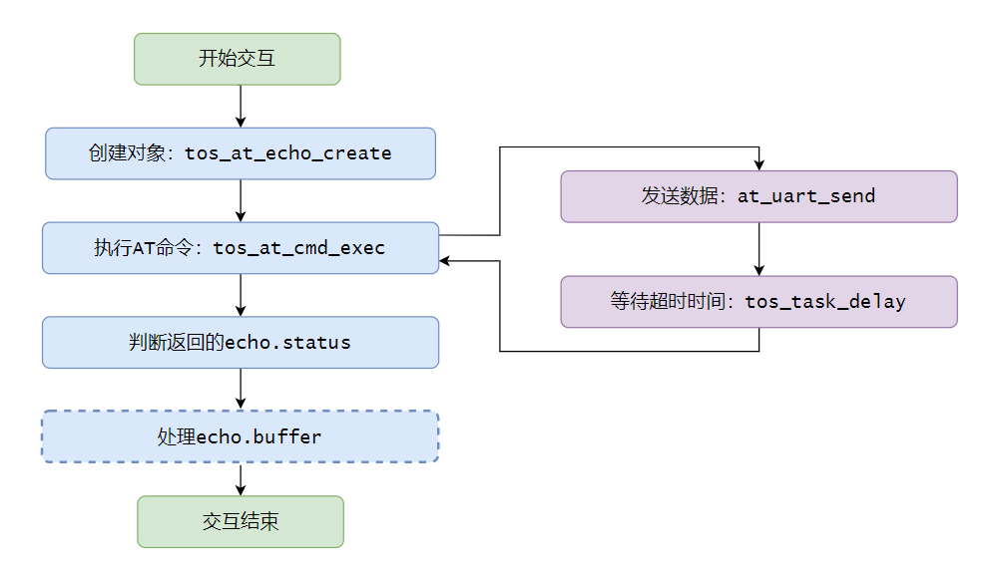
④ 如何实现多个channel同时存在？
大多数通信模组在进行 TCP/IP 通信时，支持同时创建多个socket通信（一般为6个），作为一个通用的AT框架，也为了更好的上层SAL服务，AT框架也相应的支持多channel。
每个channel对象如下：
typedef struct at_data_channel_st {
uint8_t is_free;
k_chr_fifo_t rx_fifo;
uint8_t *rx_fifo_buffer;
k_mutex_t rx_lock;
at_channel_status_t status;
const char *remote_ip;
const char *remote_port;
} at_data_channel_t;
每次上层发起 Socket Connect连接时，将此Socket的ip和port绑定到channel对象，然后动态申请一块内存作为该channnel的接收缓冲区，当Socket close时，随即释放此缓冲区。
2.3. TencentOS-tiny AT框架参数配置
AT框架的所有缓冲区内存都是使用动态内存，内部机制使用到了信号量sem、互斥锁mutex、字符流队列chr_fifo、计时表stopwatch，所以请首先保证在tos_config.h中这些配置处于使能模式，其中动态内存池的大小可以根据随后 AT 框架的配置修改：
#define TOS_CFG_MUTEX_EN 1u
#define TOS_CFG_SEM_EN 1u
#define TOS_CFG_MMHEAP_EN 1u
#define TOS_CFG_MMHEAP_DEFAULT_POOL_EN 1u
#define TOS_CFG_MMHEAP_DEFAULT_POOL_SIZE 0x8000
AT框架的所有可配置选项都已在tos_at.h中使用宏定义给出，可以根据自己的需要进行裁剪配置：
#define AT_DATA_CHANNEL_NUM 6
#define AT_DATA_CHANNEL_FIFO_BUFFER_SIZE (2048 + 1024)
#define AT_UART_RX_FIFO_BUFFER_SIZE (2048 + 1024)
#define AT_RECV_CACHE_SIZE 2048
#define AT_CMD_BUFFER_SIZE 512
#define AT_PARSER_TASK_STACK_SIZE 2048
#define AT_PARSER_TASK_PRIO 2
配置项的意义如下：
| 配置项 | 作用 |
|---|---|
| AT_DATA_CHANNEL_NUM | AT框架支持的最大通道数 |
| AT_DATA_CHANNEL_FIFO_BUFFER_SIZE | 每个通道的缓冲区大小 |
| AT_UART_RX_FIFO_BUFFER_SIZE | 串口接收缓冲区大小 |
| AT_RECV_CACHE_SIZE | 行缓冲区大小 |
| AT_CMD_BUFFER_SIZE | 命令缓冲区大小 |
| AT_PARSER_TASK_STACK_SIZE | 解析任务的任务栈大小 |
| AT_PARSER_TASK_PRIO | 解析任务的任务优先级 |
2.4. AT框架提供的API
- AT框架写入一个字节数据
__API__ void tos_at_uart_input_byte(uint8_t data);
此 API 通常在串口中断中调用。
- AT框架初始化
__API__ int tos_at_init(hal_uart_port_t uart_port, at_event_t *event_table, size_t event_table_size);
| 参数 | 意义 |
|---|---|
| uart_port | AT框架使用的串口 |
| event_table | 事件表地址 |
| event_table_size | 事件表大小 |
| 返回值 | 成功：0，失败：-1 |
- 创建一个 at_echo_t 对象
__API__ int tos_at_echo_create(at_echo_t *echo, char *buffer, size_t buffer_size, char *echo_expect);
| 参数 | 意义 |
|---|---|
| echo | at_echo_t对象句柄 |
| buffer | 用于保存命令执行结果的缓冲区 |
| buffer_size | 缓冲区大小 |
| echo_expect | 期望的字符串 |
| 返回值 | 成功：0，失败：-1 |
- 执行一条AT命令,timeout超时后才返回
__API__ int tos_at_cmd_exec(at_echo_t *echo, uint32_t timeout, const char *cmd, ...);
| 参数 | 意义 |
|---|---|
| echo | at_echo_t对象句柄 |
| timeout | 命令执行之后的等待时间 |
| cmd | 要执行的AT命令 |
| 返回值 | 成功：0，失败：-1 |
- 执行一条AT命令，一旦有期望结果立马返回，若无，则timeout超时后返回
__API__ int tos_at_cmd_exec_until(at_echo_t *echo, uint32_t timeout, const char *cmd, ...);
| 参数 | 意义 |
|---|---|
| echo | at_echo_t对象句柄 |
| timeout | 命令执行之后的等待时间 |
| cmd | 要执行的AT命令 |
| 返回值 | 成功：0，失败：-1 |
- 发送十六进制原始数据，timeout超时后才返回
__API__ int tos_at_raw_data_send(at_echo_t *echo, uint32_t timeout, const uint8_t *buf, size_t size);
| 参数 | 意义 |
|---|---|
| echo | at_echo_t对象句柄 |
| timeout | 命令执行之后的等待时间 |
| buf | 待发送的缓冲区 |
| size | 缓冲区大小 |
| 返回值 | 成功：0，失败：-1 |
- 发送十六进制数据，一旦有期望结果立马返回，若无，则timeout超时后返回
__API__ int tos_at_raw_data_send_until(at_echo_t *echo, uint32_t timeout, const uint8_t *buf, size_t size);
| 参数 | 意义 |
|---|---|
| echo | at_echo_t对象句柄 |
| timeout | 命令执行之后的等待时间 |
| buf | 待发送的缓冲区 |
| size | 缓冲区大小 |
| 返回值 | 成功：0，失败：-1 |
- 直接从串口接收缓冲区中读取数据
__API__ int tos_at_uart_read(uint8_t *buffer, size_t buffer_len);
| 参数 | 意义 |
|---|---|
| buf | 存放读取数据的缓冲区 |
| size | 读取数据的长度 |
| 返回值 | 成功：0，失败：-1 |
- 直接从串口接收缓冲区中读取一行数据
__API__ int tos_at_uart_readline(uint8_t *buffer, size_t buffer_len);
| 参数 | 意义 |
|---|---|
| buf | 存放读取数据的缓冲区 |
| size | 读取数据的长度 |
| 返回值 | 成功：0，失败：-1 |
- 申请一个channel
__API__ int tos_at_channel_alloc(const char *ip, const char *port);
| 参数 | 意义 |
|---|---|
| ip | socket ip |
| port | socket port |
| 返回值 | 成功：非负值、通道ID，失败：-1 |
- 写入数据到channel的接收缓冲区
__API__ int tos_at_channel_write(int channel_id, uint8_t *buffer, size_t buffer_len);
| 参数 | 意义 |
|---|---|
| channel_id | 已经申请成功的channel 通道ID |
| buf | 存放写入数据的缓冲区 |
| size | 写入数据的长度 |
| 返回值 | 成功：0，失败：-1 |
在TCP/IP通信时，解析完AT指令上报的数据时，就可以将真正网络接收的数据调用此API写入channle的接收缓冲区。
- 从channel的接收缓冲区中读取数据
__API__ int tos_at_channel_read(int channel_id, uint8_t *buffer, size_t buffer_len);
| 参数 | 意义 |
|---|---|
| channel_id | 已经申请成功的channel 通道ID |
| buf | 存放读取数据的缓冲区 |
| size | 读取数据的长度 |
| 返回值 | 成功：0，失败：-1 |
- 从channel的接收缓冲区中读取数据，有超时时间
__API__ int tos_at_channel_read_timed(int channel_id, uint8_t *buffer, size_t buffer_len, uint32_t timeout);
| 参数 | 意义 |
|---|---|
| channel_id | 已经申请成功的channel 通道ID |
| buf | 存放读取数据的缓冲区 |
| size | 读取数据的长度 |
| timeout | 读取等待时间 |
| 返回值 | 成功：0，失败：-1 |
3. TencentOS-tiny的SAL框架
3.1. 什么是SAL框架
SAL框架全称Socket Abstract Layer，提供了类似socket网络编程的抽象层，为上层应用一层统一的网络API，屏蔽了底层不同通信模组/方式的差异。
3.2. SAL框架的实现原理
TencentOS-tiny SAL框架的实现在net/sal_module_wrapper路径中，仅有两个文件：sal_module_wrapper.h和sal_module_wrapper.c。
SAL框架的底层是一套函数指针，如下：
typedef struct sal_module_st {
int (*init)(void);
int (*get_local_mac)(char *mac);
int (*get_local_ip)(char *ip, char *gw, char *mask);
int (*parse_domain)(const char *host_name, char *host_ip, size_t host_ip_len);
int (*connect)(const char *ip, const char *port, sal_proto_t proto);
int (*send)(int sock, const void *buf, size_t len);
int (*recv_timeout)(int sock, void *buf, size_t len, uint32_t timeout);
int (*recv)(int sock, void *buf, size_t len);
int (*sendto)(int sock, char *ip, char *port, const void *buf, size_t len);
int (*recvfrom)(int sock, void *buf, size_t len);
int (*recvfrom_timeout)(int sock, void *buf, size_t len, uint32_t timeout);
int (*close)(int sock);
} sal_module_t;
不同的通信模组驱动都去实现这一套函数指针即可，TencentOS-tiny官方已经提供了非常多的通信模组驱动实现SAL框架，覆盖常用的通信方式，比如2G、4G Cat.4、4G Cat.1、NB-IoT等，在devices文件夹下：
- air724
- bc26
- bc25_28_95
- bc35_28_95_lwm2m
- ec20
- esp8266
- m26
- m5310a
- m6312
- sim800a
- sim7600ce
- 欢迎贡献更多驱动...
3.3. SAL框架提供的网络编程API
- 注册该模组实现到SAL框架
int tos_sal_module_register(sal_module_t *module);
| 参数 | 作用 |
|---|---|
| module | 模组实现的函数指针结构体句柄 |
| 返回值 | 成功：0，失败：-1 |
- 模组初始化
int tos_sal_module_init(void);
| 参数 | 作用 |
|---|---|
| 返回值 | 成功：0，失败：-1 |
- 域名解析
int tos_sal_module_parse_domain(const char *host_name, char *host_ip, size_t host_ip_len);
| 参数 | 作用 |
|---|---|
| host_name | 域名 |
| host_ip | 存放解析出的ip缓冲区 |
| host_ip_len | 缓冲区大小 |
| 返回值 | 成功：0，失败：-1 |
- 建立 TCP/UDP socket连接
int tos_sal_module_connect(const char *ip, const char *port, sal_proto_t proto);
| 参数 | 作用 |
|---|---|
| ip | 目的主机ip |
| port | 目的主机port |
| proto | 协议类型：TOS_SAL_PROTO_TCP或者TOS_SAL_PROTO_UDP |
| 返回值 | 成功：socket id，失败：-1 |
- TCP socket发送数据
int tos_sal_module_send(int sock, const void *buf, size_t len);
| 参数 | 作用 |
|---|---|
| sock | socket id |
| buf | 待发送数据 |
| len | 待发送数据长度 |
| 返回值 | 成功：实际发送数据的长度，失败：-1 |
- TCP socket接收数据
int tos_sal_module_recv(int sock, void *buf, size_t len);
int tos_sal_module_recv_timeout(int sock, void *buf, size_t len, uint32_t timeout);
| 参数 | 作用 |
|---|---|
| sock | socket id |
| buf | 存放接收数据的缓冲区 |
| len | 缓冲区长度 |
| timeout | 等待超时时间 |
| 返回值 | 成功：实际读取数据的长度，失败：-1 |
- UDP socket发送数据
int tos_sal_module_sendto(int sock, char *ip, char *port, const void *buf, size_t len);
| 参数 | 作用 |
|---|---|
| sock | socket id |
| ip | 目的主机ip |
| port | 目的主机port |
| buf | 待发送数据 |
| len | 待发送数据长度 |
| 返回值 | 成功：实际发送数据的长度，失败：-1 |
- UDP socket接收数据
int tos_sal_module_recvfrom(int sock, void *buf, size_t len);
int tos_sal_module_recvfrom_timeout(int sock, void *buf, size_t len, uint32_t timeout);
| 参数 | 作用 |
|---|---|
| sock | socket id |
| buf | 存放接收数据的缓冲区 |
| len | 缓冲区长度 |
| timeout | 等待超时时间 |
| 返回值 | 成功：实际读取数据的长度，失败：-1 |
- 关闭socket
int tos_sal_module_close(int sock);
| 参数 | 作用 |
|---|---|
| sock | socket id |
| 返回值 | 成功：0，失败：-1 |
4. AT框架+SAL框架移植方法
4.1. 移植前的准备
本文中我使用官方EVB_MX+开发板为例，主控芯片为STM32L431RCT6，USART1用于printf打印日志信息，LPUART1用于和通信模组交互，通信模组使用 WIFI 模组 ESP8266为例。
移植AT框架前需要准备好一个移植好TencentOS-tiny内核的工程，可以做到串口的正常收发，这里我使用 TencentOS-tiny 中TencentOS-tiny\board\TencentOS_tiny_EVB_MX_Plus\KEIL\hello_world中的工程。
4.2. 移植AT框架
TencentOS-tiny AT 框架的实现在 net/at 目录下的 tos_at.h和tos_at.c两个文件中，TencentOS-tiny AT框架底层使用的串口驱动HAL层在platform\hal\st\stm32l4xx\src目录下的文件tos_hal_uart.c中，头文件在kernel\hal\include路径中。
首先将这两个c文件添加到Keil工程中：
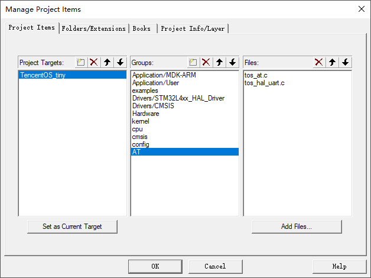
然后将头文件路径添加到Keil MDK中：
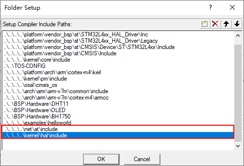
然后在串口中断中配置调用AT框架的字节接收函数，编辑stm32l4xx_it.c文件：
① 添加AT框架的头文件：
/* Private includes ----------------------------------------------------------*/
/* USER CODE BEGIN Includes */
#include "tos_at.h"
/* USER CODE END Includes */
② 在文件最后添加串口中断回调函数：
/* USER CODE BEGIN 1 */
void HAL_UART_RxCpltCallback(UART_HandleTypeDef *huart)
{
extern uint8_t data;
if (huart->Instance == LPUART1) {
HAL_UART_Receive_IT(&hlpuart1, &data, 1);
tos_at_uart_input_byte(data);
}
}
/* USER CODE END 1 */
注意，在回调函数中声明data变量在外部定义，这是因为STM32 HAL库的机制，需要在初始化完成之后先调用一次串口接收函数，使能串口接收中断，编辑usart.c文件：
① 在文件开头定义data变量为全局变量：
/* USER CODE BEGIN 0 */
uint8_t data;
/* USER CODE END 0 */
② 在串口初始化完成之后使能接收中断：
/* LPUART1 init function */
void MX_LPUART1_UART_Init(void)
{
hlpuart1.Instance = LPUART1;
hlpuart1.Init.BaudRate = 115200;
hlpuart1.Init.WordLength = UART_WORDLENGTH_8B;
hlpuart1.Init.StopBits = UART_STOPBITS_1;
hlpuart1.Init.Parity = UART_PARITY_NONE;
hlpuart1.Init.Mode = UART_MODE_TX_RX;
hlpuart1.Init.HwFlowCtl = UART_HWCONTROL_NONE;
hlpuart1.Init.OneBitSampling = UART_ONE_BIT_SAMPLE_DISABLE;
hlpuart1.AdvancedInit.AdvFeatureInit = UART_ADVFEATURE_NO_INIT;
if (HAL_UART_Init(&hlpuart1) != HAL_OK)
{
Error_Handler();
}
//手动添加，使能串口中断
HAL_UART_Receive_IT(&hlpuart1, &data, 1);
}
4.3. 移植SAL框架
TencentOS-tiny SAL框架的实现在net/sal_module_wrapper路径中，仅有两个文件：sal_module_wrapper.h和sal_module_wrapper.c。
将c文件添加到Keil MDK工程中：
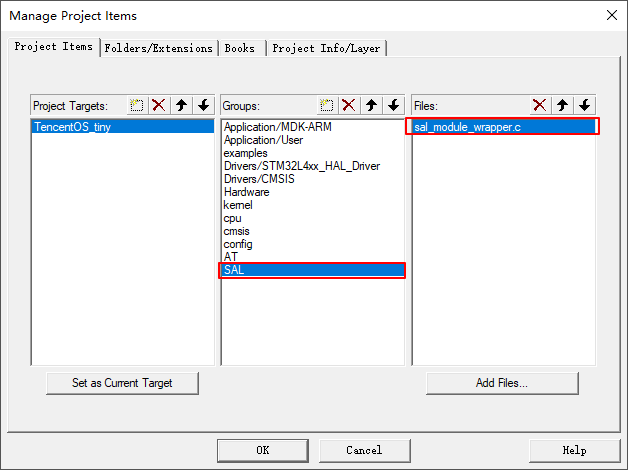
将头文件所在路径添加到Keil MDK中：
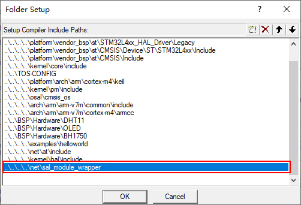
4.4. 移植通信模组驱动
TencentOS-tiny官方已经提供了非常多的通信模组驱动实现SAL框架，覆盖常用的通信方式，比如2G、4G Cat.4、4G Cat.1、NB-IoT等，在devices文件夹下,：
- air724
- bc26
- bc25_28_95
- bc35_28_95_lwm2m
- ec20
- esp8266
- m26
- m5310a
- m6312
- sim800a
- sim7600ce
- 欢迎贡献更多驱动...
因为这些驱动都是SAL框架的实现，所以这些通信模组的驱动可以根据实际硬件情况选择一种加入到工程中，这里我以 WIFI 模组 ESP8266为例，演示如何加入通信模组驱动到工程中。
ESP8266的驱动在devices\esp8266目录中。
首先将esp8266.c文件加入到Keil MDK工程中：
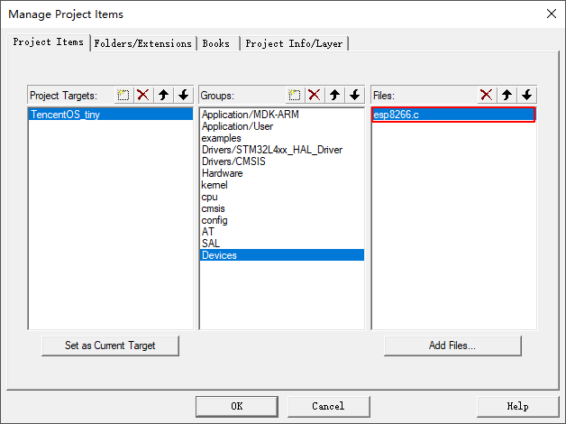
然后将esp8266.h头文件所在路径添加到Keil MDK工程中：
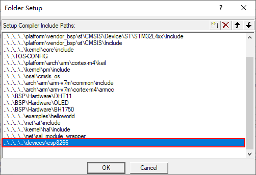
移植完成。
4.5. 测试网络通信
移植完成之后，可直接使用官方提供的示例代码进行测试，测试双socket进行TCP通信的测试程序为examples\tcp_through_module\tcp_through_module.c。
将工程中的 helloworld 示例代码更换为该文件，如图：
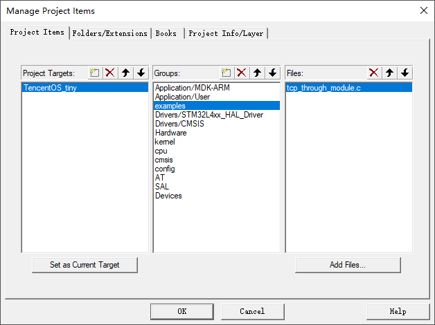
在这个示例中，首先通过宏定义来配置当前使用的是哪个模组：
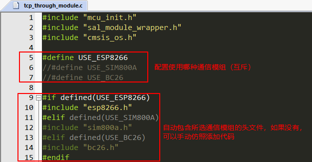
然后调用对应模组的初始化函数：
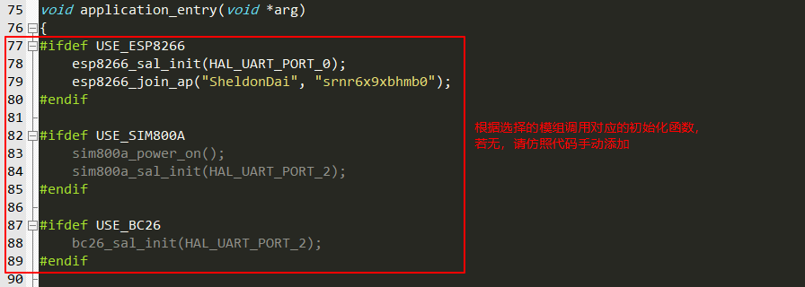
此处需要注意：初始化模组时指定的串口号即为AT通信模组所使用的串口，在tos_hal_uart.h中定义：
typedef enum hal_uart_port_en {
HAL_UART_PORT_0 = 0, //对应LPUART1
HAL_UART_PORT_1, //对应USART1
HAL_UART_PORT_2, //依此类推
HAL_UART_PORT_3,
HAL_UART_PORT_4,
HAL_UART_PORT_5,
HAL_UART_PORT_6,
} hal_uart_port_t;
最后修改两个TCP Socket 的ip和端口为自己测试服务器的ip和端口：
socket_id_0 = tos_sal_module_connect("117.50.111.72", "8080", TOS_SAL_PROTO_TCP);
socket_id_1 = tos_sal_module_connect("117.50.111.72", "8001", TOS_SAL_PROTO_TCP);
TCP测试服务器需要自己搭建或者使用一些小工具，此处不再详述。
修改完成之后，编译程序，烧录到开发板中，在串口助手中查看结果：
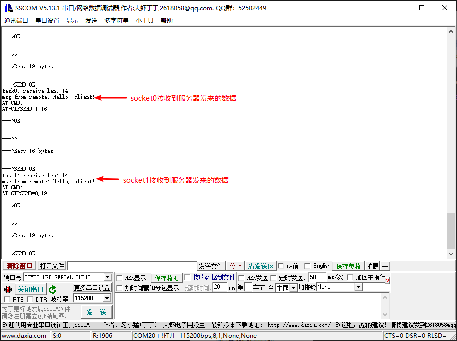
在 socket0 的服务端查看模组发送的消息：
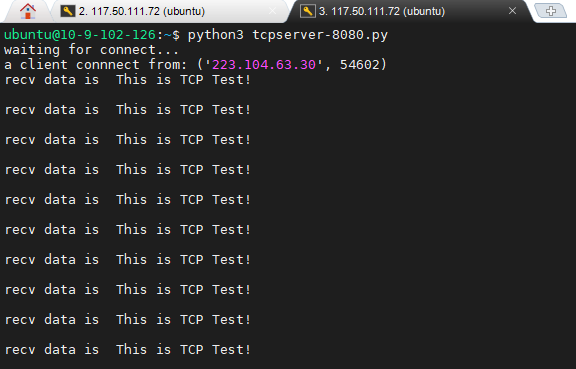
在 socket1 的服务端查看模组发送的消息：
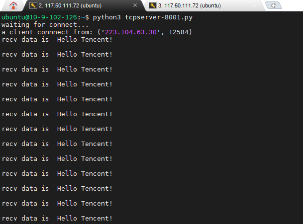
至此，测试完成。
5. 如何适配一个新的通信模组驱动
基于模组的AT指令集，使用 TencentOS-tiny AT 框架与模组交互，实现SAL框架所定义的函数，这个过程称为通信模组适配。
本文中我以移远通信的4G通信模组 EC20 作为示例，讲述一个全新的通信模组适配流程。
Step1. 使用串口助手调试，熟悉该模组的AT指令集
适配SAL层需要熟悉模组的三类AT指令：
- 基本查询配置指令
- TCP/IP网络协议栈AT指令
- TCP/IP网络协议栈数据接收机制
比如EC20相关的AT指令如下：
① 基本查询配置指令
- 测试AT指令是否正常？
AT
OK
- 查询SIM卡是否正常？
AT+CPIN?
+CPIN: READY
OK
- 查询模组的信号强度
AT+CSQ
+CSQ: 17,0
OK
- 查询模组是否注册到GSM网络
AT+CREG?
+CREG: 0,1
OK
- 查询模组是否注册上GPRS网络
AT+CGREG?
+CGREG: 0,1
OK
- 设置GPRS的APN
AT+QICSGP=1,1,"CMNET"
OK
- 激活移动场景
AT+QIACT=1
OK
② TCP/IP网络协议栈AT指令
TCP/IP网络协议栈至少需要TCP/UDP socket的通信AT指令，其它上层协议的AT指令暂时不用。
- 建立Socket
AT+QIOPEN=1,0,"TCP","117.50.111.72",8902,0,0
OK
+QIOPEN: 0,0
在建立socket的时候需要注意，有的通信模组需要提前使用AT指令配置单链路模式还是多链路模式（eg. ESP8266）,而有的通信模组默认直接支持多链路模式，无需配置。
- 发送数据
AT+QISEND=0
> hello<0x1a>
SEND OK
发送数据的时候需要注意，有的通信模组发送数据使用ASCII字符(eg. ESP8266、EC20等)，而有的通信模组发送数据使用十六进制（eg. NB-IoT类模组）
- 接收数据
接下来的一节重点讲述。
- 关闭Socket
AT+QICLOSE=0
OK
③ TCP/IP网络协议栈数据接收机制
通信模组在接收到服务器发来的数据时，会有两种方式上报给MCU：
- 使用固定的IP头上报socket id和数据长度，需要再次去读取数据(缓冲模式接收)
//模组上报
+QIURC: "recv",0
//MCU发出AT指令去读取数据
AT+QIRD=0,1500
+QIRD: 14
Hello, client!
OK
- 使用固定的IP头上报socket id和数据长度，同时一起上报数据(直接模式接收)
+QIURC: "recv",0,14
Hello, client!
有的模组只支持某一种模式，有的模组两种模式都支持，可以自己配置，对于TencentOS-tiny的AT框架来说，第二种直接上报模式解析起来会更加方便。
Step2. 三类AT指令，三种实现方式
上面讲述了适配SAL层需要熟悉模组的三类AT指令：基本查询配置指令、TCP/IP网络协议栈AT指令、TCP/IP网络协议栈数据接收机制，这节讲述如何使用AT框架实现这三类AT指令。
① 只需要判断是否返回OK的AT指令
这一类AT指令的实现函数除了指令内容不同，别的都相同，比如关闭回显的AT指令：
ATE0
OK
对应的实现方法如下：
static int ec20_echo_close(void)
{
at_echo_t echo;
/* 创建一个echo 对象，缓冲区为NULL，期望字符串为NULL */
tos_at_echo_create(&echo, NULL, 0, NULL);
/* 执行AT命令，超时时长1000ms */
tos_at_cmd_exec(&echo, 1000, "ATE0\r\n");
/* 判断执行结果是否为OK */
if (echo.status == AT_ECHO_STATUS_OK)
{
return 0;
}
return -1;
}
② 需要判断是否OK，也需要解析执行结果的AT指令
这一类AT指令的实现函数中，不同点在于，创建echo对象的时候需要传入一个buffer来存放指令执行的结果，比如查询信号强度的AT指令：
AT+CSQ
+CSQ: 17,0
OK
对应的实现方法如下：
static int ec20_signal_quality_check(void)
{
int rssi, ber;
at_echo_t echo;
char echo_buffer[32], *str;
int try = 0;
/* 创建echo对象，传入一个缓冲区存放AT命令执行结果 */
tos_at_echo_create(&echo, echo_buffer, sizeof(echo_buffer), NULL);
/* 尝试检测10次，一旦有一次正常，返回 */
while (try++ < 10)
{
/* 执行AT命令，超时时长1000ms */
tos_at_cmd_exec(&echo, 1000, "AT+CSQ\r\n");
/* 判断执行结果是否返回了OK */
if (echo.status != AT_ECHO_STATUS_OK)
{
return -1;
}
/* 从AT指令的执行结果中解析提取CSQ值进行判断 */
str = strstr(echo.buffer, "+CSQ:");
sscanf(str, "+CSQ:%d,%d", &rssi, &ber);
if (rssi != 99) {
return 0;
}
}
return -1;
}
③ 模组主动上报的数据处理
这一类AT指令对应TCP/IP协议栈接收数据的上报机制，使用AT框架的事件机制进行处理。
首先将固定的ip头和事件处理回调函数注册：
at_event_t ec20_at_event[] = {
{ "+QIURC: \"recv\",", ec20_incoming_data_process}, //处理远程服务器发来的数据
{ "+QIURC: \"dnsgip\",", ec20_domain_data_process}, //处理域名解析结果，暂时不管
};
事件处理回调函数自己编写，主要作用是提取模组上报的scoketid、数据长度、数据内容，然后将数据内容写入到对应socket id 的channel中。
需要注意，AT框架一旦读取解析到固定的IP头，则停止解析，拉起对应的回调函数，所以在回调函数中可以继续从缓冲区中一边读取一边解析。
解析示例如下：
__STATIC__ void ec20_incoming_data_process(void)
{
uint8_t data;
int channel_id = 0, data_len = 0, read_len;
uint8_t buffer[128];
/*
模组上报的数据格式：
+QIURC: "recv",<sockid>,<datalen>
<data content>
*/
/* 注册的ip头是：[+QIURC: "recv",]回调函数被拉起执行后，接着处理后边的数据即可 */
/* 读取解析socket id */
while (1)
{
if (tos_at_uart_read(&data, 1) != 1)
{
return;
}
if (data == ',')
{
break;
}
channel_id = channel_id * 10 + (data - '0');
}
/* 读取解析数据长度 */
while (1)
{
if (tos_at_uart_read(&data, 1) != 1)
{
return;
}
if (data == '\r')
{
break;
}
data_len = data_len * 10 + (data - '0');
}
/* 读取'\r'之后的'\n'，不作任何处理 */
if (tos_at_uart_read(&data, 1) != 1)
{
return;
}
/* 根据解析出的数据长度和缓冲区的长度，循环读取数据内容，写入到对应 socket id 的channel中 */
do {
#define MIN(a, b) ((a) < (b) ? (a) : (b))
read_len = MIN(data_len, sizeof(buffer));
/* 读取数据 */
if (tos_at_uart_read(buffer, read_len) != read_len) {
return;
}
/* 写入到对应的channel中 */
if (tos_at_channel_write(channel_id, buffer, read_len) <= 0) {
return;
}
data_len -= read_len;
} while (data_len > 0);
return;
}
Step3. 整体适配流程
前两步都是细节性的处理，这一步从整体的角度讲述适配流程。
① 模组初始化
static int ec20_init(void)
{
printf("Init ec20 ...\n" );
/* 关闭回显 */
if (ec20_echo_close() != 0)
{
printf("echo close failed,please check your module\n");
return -1;
}
/* 检测SIM卡是否正常 */
if(ec20_sim_card_check() != 0)
{
printf("sim card check failed,please insert your card\n");
return -1;
}
/* 检测信号强度是否正常 */
if (ec20_signal_quality_check() != 0)
{
printf("signal quality check status failed\n");
return -1;
}
/* 检测是否注册到GSM网络 */
if(ec20_gsm_network_check() != 0)
{
printf("GSM network register status check fail\n");
return -1;
}
/* 检测是否注册到GPRS网络 */
if(ec20_gprs_network_check() != 0)
{
printf("GPRS network register status check fail\n");
return -1;
}
/* 关闭APN */
if(ec20_close_apn() != 0)
{
printf("close apn failed\n");
return -1;
}
/* 设置APN，激活移动场景 */
if (ec20_set_apn() != 0) {
printf("apn set FAILED\n");
return -1;
}
printf("Init ec20 ok\n" );
return 0;
}
② 将实现的函数映射到SAL框架上：
sal_module_t sal_module_ec20 = {
.init = ec20_init,
.connect = ec20_connect,
.send = ec20_send,
.recv_timeout = ec20_recv_timeout,
.recv = ec20_recv,
.sendto = ec20_sendto,
.recvfrom = ec20_recvfrom,
.recvfrom_timeout = ec20_recvfrom_timeout,
.close = ec20_close,
.parse_domain = ec20_parse_domain,
};
③ 再次封装，留出一个外部调用接口，供上层应用程序调用：
int ec20_sal_init(hal_uart_port_t uart_port)
{
/* 初始化AT框架及其串口 */
if (tos_at_init(uart_port, ec20_at_event,
sizeof(ec20_at_event) / sizeof(ec20_at_event[0])) != 0) {
return -1;
}
/* 将第②步中映射的函数关系，注册到SAL框架 */
if (tos_sal_module_register(&sal_module_ec20) != 0) {
return -1;
}
/* 调用SAL初始化函数，因为接口和映射的存在，最终调用到ec20_init */
if (tos_sal_module_init() != 0) {
return -1;
}
return 0;
}